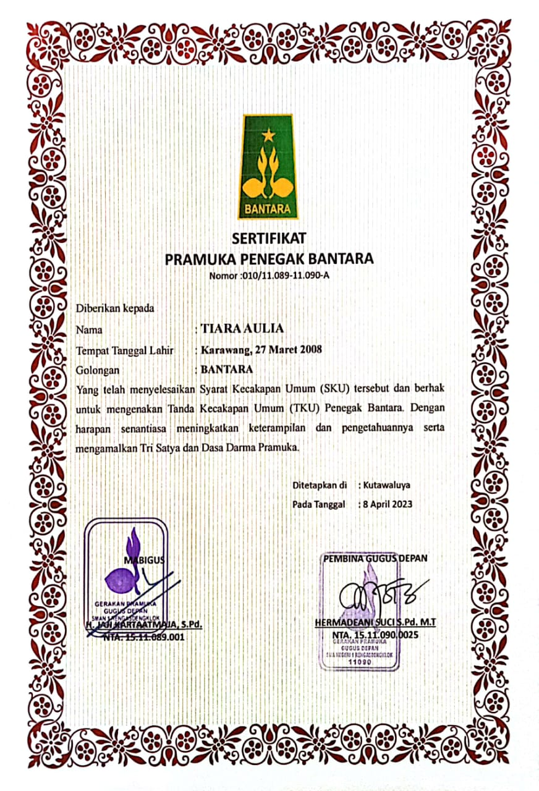
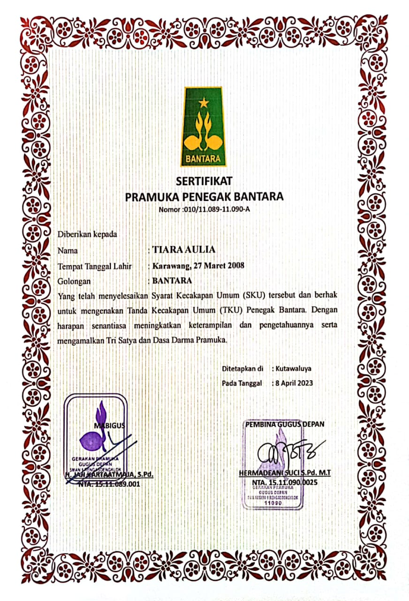
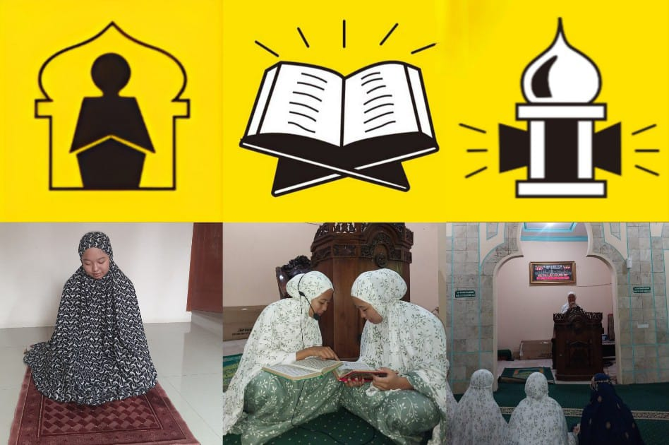
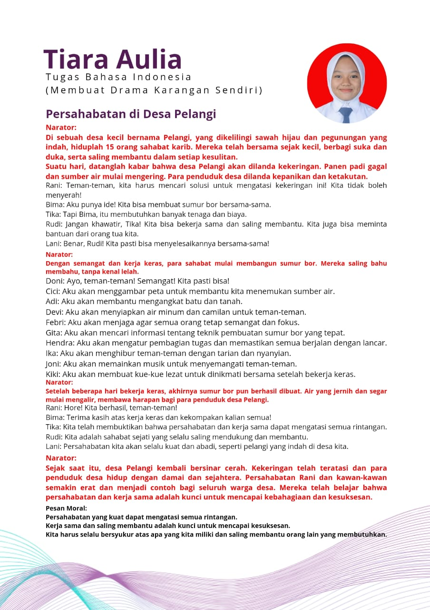
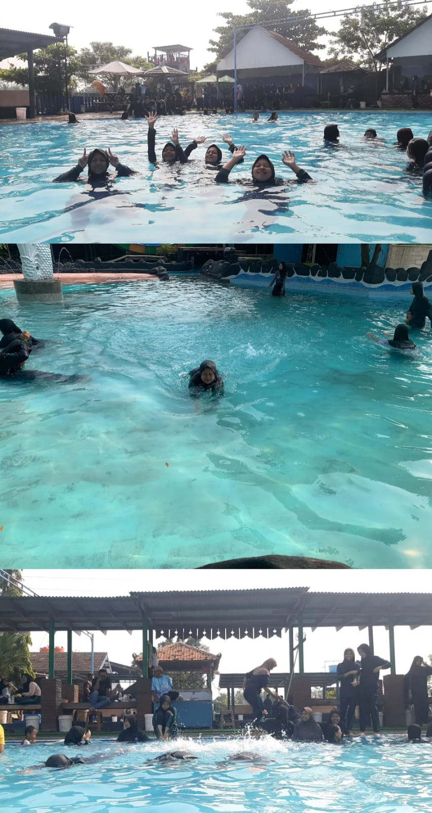
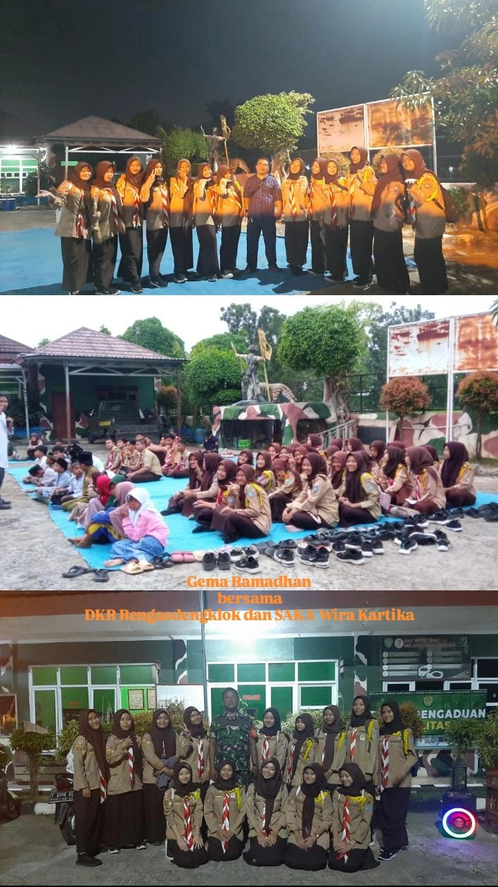
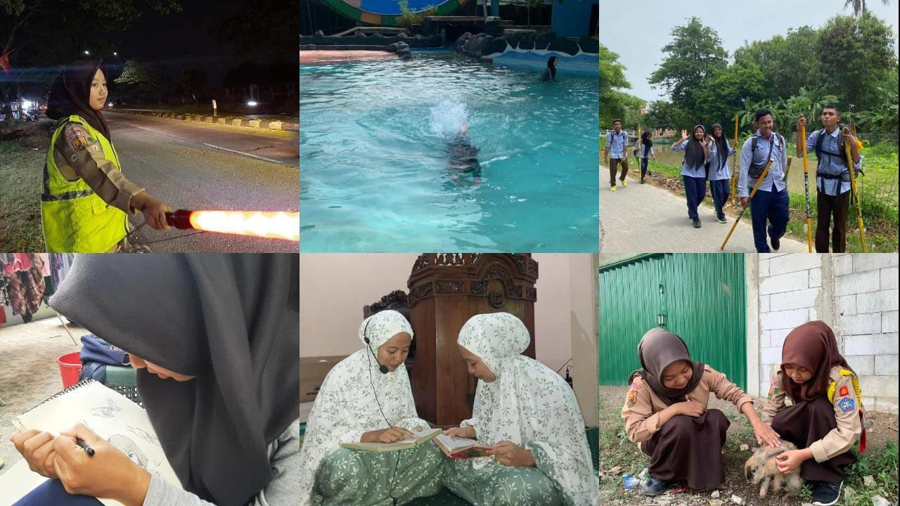
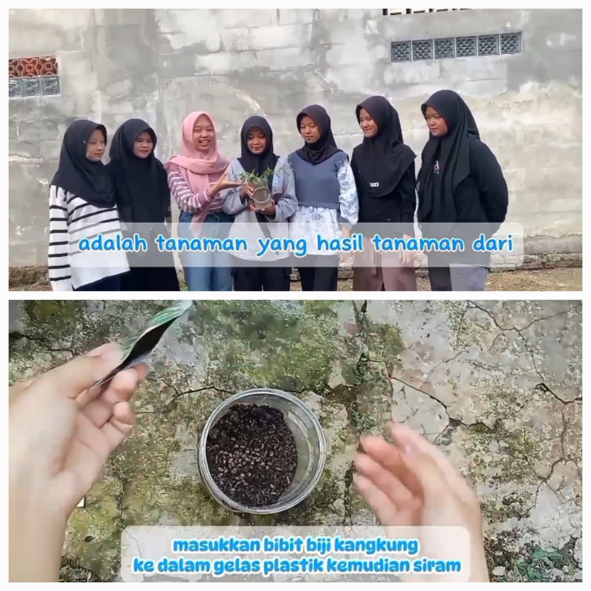

Profile Diri

Tiara Aulia
Hallo perkenalkan saya Tiara Aulia siswi SMAN 1 Rengasdengklok, saya lahir di Karawang, 27 maret 2008. Hobi saya travelling, berpetualang dan kuliner
Pendidikan Formal
- MI Al Isti'anah
- MTS Al Faridiyah
- SMAN 1 Rengasdengklok
Pendidikan Non Formal
- Mengikuti kegiatan Pramuka
Organisasi
- Pramuka
- Organisasi Siswa Intra Sekolah (OSIS)
- Saka Bakti Husada
Pencapaian SKU/TKU

Pencapaian Penegak Bantara
Berikut pencapaian SKU tingkat Bantara
 



Pencapaian SKK/TKK

Dokumentasi pencapaian bidang-bidang TKK
Bidang agama, mental, moral, spiritual, pembentukan pribadi dan watak
TKK Solat


Bidang patriotisme dan seni budaya
TKK Pengarang


Bidang ketangkasan dan kesehatan
TKK Juru Renang


untuk mencapai tkk perenang saya dapat terjun kedalam kolam renang dengan baik dari tepi kolam
TKK Gerak jalan

Bidang keterampilan dan teknik pembangunan
TKK Peternak Kelinci


untuk mencapai tkk peternak kelinci saya dapat menjaga dan merawat sedikitnya 4 ekor kelinci betina
TKK Juru Anyam


Untuk mencapai tkk juru anyam saya dapat membuat sedikitnya 5 macam barang anyaman sederhana
Bidang sosial, perikemanusiaan, gotong-royong, ketertiban masyarakat, perdamaian dunia dan lingkungan hidup
TKK Pengaman Lalu Lintas


Untuk mencapi tkk Pengaman lalu lintas ini saya dapat menjelaskan tata tertib lalu lintas dan juga dapat mengatur arus mudik dengan baik
Keikutsertaan Kegiatan

Gema Ramadhan tingkat ranting
Saya mengikuti kegiatan gema ramadan yang bertempat dikoramil 04/04

Legalitas
Telah Menyelesaikan Tingkatan akhir Pramuka Penegak
Tingkat Bantara
Tingkat Laksana


Telah Menyelesaikan tingkatan TKK pada 5 bidang kecakapan, mulai dari tingkat Purwa, Madya dan ada beberapa di tingkat Utama


Project Produktif
Dalam Project Produktif ini saya membuat Tanaman Tauge dengan Media Tanam Hidroponik

Berikut Link Youtube Project Produktif Pembuatan Tanaman Hidroponik
Project Produktif
Penguasaan Bahasa Asing

Berikut Link Youtube Penguasaan Bahasa Asing
Penguasaan Bahasa asing